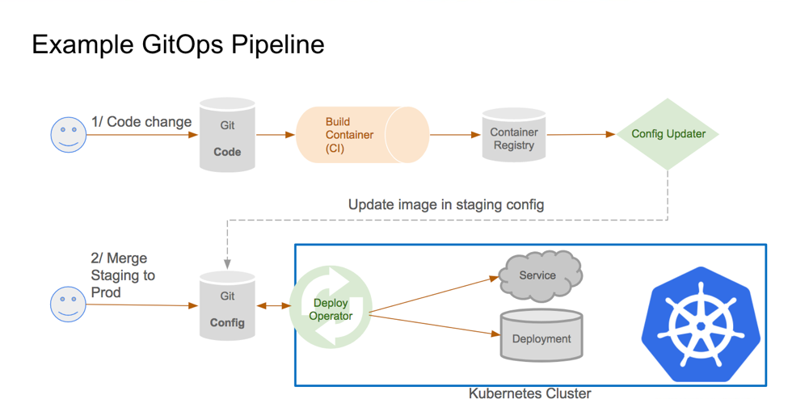

Git Workshop

Git vs. GitHub
Git vs. GitHub
| Git | GitHub |
|---|---|
| Software | Service |
| command line tool | GUI |
| installed locally | hosted on the web |
| VCS to mange source code history | hosting service for GIT repositories |
GitHub uses Git as central tool for its service
Architecture
Architecture - directed acyclic graph
The history in Git is formed from the commit objects and creates a directed acyclic graph

Architecture - Git-Workflow

Recommended sequence: commit → pull → push
Architecture - Distributed Development
- Advantage: No network connection needed for commits.
- Checkins in local repository also work if production branch in SVN is broken.
Architecture - Creating a new repository
When you run
git initin a folder, Git creates the.gitdirectory

This
.gitdirectory contains your local repository data
GIT/TFS
Differences to TFS
| TFS | Git |
|---|---|
| Centralised VCS | Distributed VCS |
| branches are folders in TFS folder hierarchy | private local branches possible |
Git is recommended over TFS by Microsoft itself for new projects!
Migration form TFS to Git
history not needed:
git initon current fileshistory is needed: http://git-tfs.com/
git tfs clone ...instead of the usualgit clone ...- git-tfs works as two-way bridge so changes can also be pushed to TFS:
git tfs checkintool
Migration form TFS to Git
Plan your migration carefully:
usually large binary data is not put into Git -> cleanup before migration
for big projects multiple Git-Repositories could be created and included via Submodule/Subtree
Git-Configuration
can be local for git-repository within
.git/configcan be global via global flag
git config --global ...can be accessed via
git config --list
Git-Configuration
Typical settings:
git config --global core.editor "code --wait"git config --global user.name "John Doe"git config --global user.email johndoe@example.comgit config --global merge.tool kdiff3git config --global credential.helper cache
.gitignore
.gitinore-File specifies intentionally untracked files that Git should ignore
files alread track are not affected!
each line in .gitignore specifies a pattern
.gitignore - Patterns
#serves as a comment!negates a pattern/directory separator- slash at beginning -> relative to the .gitignore-directory, otherwise any level
- slash at end -> matches only directories, otherwise also files
*matches anything except slash?like*but only one character**match in all directories, e.g.**/foo/**matches everything inside, e.g.foo/**/**/matches zero or more directories, e.g.foo/**/foo
Tooling
Tooling
- IDEs: VisualStudio, VS-Code
- Clients: Github Desktop, SourceTree, SmartGit, GitKraken, GitTower
- Explorer-Integration: TortoiseGit
- Merge-Tools: meld, kdiff3
- Shells: ZSH+Plugin
- Azure-Devops-Pipeline -> Github-Action Converter
Branching
Branching
Creating a new branch: git branch <branchname>
branches are very lightweight in Git: You can have many and switch very fast.
Branching
list branches with git branch or git branch -v
with --merged or --no-merged option you can filter branches that you have/not merged into the branch you are currently on
Branching
- rename branch with
git branch --move bad-branch-name corrected-branch-name- push it with
git push --set-upstream origin corrected-branch-name - delete bad branch on remote with
git push origin --delete bad-branch-name
- push it with
Branching

Branching

Branching

Branching Strategies
GitFlow
GithubFlow
Trunk-Based Development
Branching Strategies: GitFlow

Branching Strategies: GitFlow
Pros
- isolated features
- code in master remains clean and organized. Only updated with tested code
- easy traceability as merges are bundled/labeled
- good for traditional software distribution
Cons
- Many branches with complicated rules
- Heavy maintenance workload for released versions
- structured and specific development path conflict with agile iterative approach
Branching Strategies: Github-Flow

Branching Strategies: GithubFlow
Pros
- clear and simple collaboration rules
- Continuous integration and deployment
- Less risk of technical debt with this branching strategy
Cons
- Speed comes at cost of less organized workflow in comparison to Git-Flow
- This branching stratey emphasizes constant deployment. Limitation for teams that tent to make larger releases or test several features together
- release preparation and bug fixes happen both in master branch -> requires attention
Branching Strategies: Trunk-Based-Development

Working with Git
Working with Remotes
“Remote repositories are versions of your project that are hosted on the Internet or network somewhere”
- to list the current remotes you can use
git remote -v - a remote can be inspected with
git remote show origin - when cloning a repo the origin is already set to the repo you cloned from
- remotes can be added with
git remote add pb <e.g. some github-repo-url> - to remove a remote use
git remote remove <remote-name> - fetching from a remote:
git fetch - pulling from a remote:
git pull(pull is a combination ofgit fetchandgit merge) - pushing to a remote:
git push origin master
Pull-Request
https://git-scm.com/docs/git-request-pull https://www.atlassian.com/de/git/tutorials/making-a-pull-request
Git log
https://www.atlassian.com/git/tutorials/git-log
git log --decorate --graph --oneline --allTagging
- list your existing tags with
git tagor search withgit tag -l "v1.8.5*" - you can create a tag with
git tag -a v1.9 -m "my version 1.9" - to get the data of a tagged commit use
git show v1.9 - when tagging without -a, -m, -s option a lightweight tag is created only containing the commit checksum, e.g.
git tag v1.9-lw - tagging later can be done by specifying the commit the should be tagged, e.g.
git tag -a v1.9 9fceb02 - by default
git pushdoes not transfer tags to the remote server, instead usegit push origin v1.9orgit push origin --tags - tags can be deleted by
git tag -d v1.9 - to checkout a tagged commit use
git checkout v1.9(be aware of detached HEAD. Details: https://git-scm.com/book/en/v2/Git-Basics-Tagging)
Git Aliases
“Can simplify your Git-experience by settig custom aliases that are easier/shorter”
e.g. git config --global alias.unstage 'reset HEAD --' enables usage of git unstage fileA instead of git reset HEAD -- fileA
Submodules
A git submodule is a record within a host git repository that points to a specific commit in another external repository
git submodule add https://bitbucket.org/somerepo/awesomelibrary
Submodules
- Submodules do not track git refs or branches and are not automatically updated when the host repository is updated
- If you need to maintain a strict version management over your external dependencies, it can make sense to use git submodules
Subtrees
Lets you nest one repository into anothers as sub-directory
Subtrees
Pros
- The sub-project’s code is available right after the clone of the super project is done
- less overhead than Submodules (e.g. does not add new metadata files)
Cons
- you have to learn a new merging strategy (subtree merge)
- Contributing code back upstream for the sub-projects is slightly more complicated
Merge strategies
https://www.geeksforgeeks.org/merge-strategies-in-git/
If not specified explicitly Git will automatically choose a strategy based on the branches provided for merging
- Fast Forward (Rebase)
- Recursive
- Ours
- Octopus
- Resolve
- Subtree
Merge: Fast Forward (Rebase)

Merge: Recursive
Merge: Ours

Merge: Octopus
git merge -s octopus

Resolves cases with more than two heads. It is primarily used for bundling topic branch heads together
Linus Torvalds was not happy about a pull-request containing an octopus merge of 66 branches: https://marc.info/?l=linux-kernel&m=139033182525831
Merge: Resolve
git merge -s resolve
Resolve two heads by using a 3-way-merge. Complex conflicts have to be solved manually.

Merge: Subtree
git merge -s subtree

Git is often smart enough to figure out that one is a subtree of the other and merge appropriately
Mergetool & Difftool
git mergetoolopens the merge tool defined in git-config (e.g. meld)git diff Commit1sha Commit2shaopens the diff tool defined in git-config
Merging vs. Rebasing vs. Cherry-Picking
Cherry-Picking
Cherry picking can cause duplicate commits -> often merges are better
Usage: git cherry-pick commitSha
Cherry-Picking
Use cases for Cherry-Picking:
- Team Collaboration, e.g. backend create data-structure and frontend-dev cherry-picks it
- Bug-Fixing: hotfix can be cherry-picked to main branch before it affects more users
https://www.atlassian.com/de/git/tutorials/merging-vs-rebasing https://git-scm.com/book/en/v2/Git-Branching-Rebasing https://git-scm.com/book/en/v2/Distributed-Git-Maintaining-a-Project https://git-scm.com/book/en/v2/Appendix-C%3A-Git-Commands-Patching
Undoing commits
https://git-scm.com/book/en/v2/Git-Tools-Reset-Demystified
From local repository:
- keeping your local changes:
git reset --soft HEAD - discarding your local changes:
git reset --hard HEAD - unstage staged file:
git restore --staged <filename> - unmodifying a file:
git restore <filename>
From public repository:
git revert HEADandgit commit -m "reverted last commit"
HEAD points to last commit in branch:
git reset HEAD~<no-of-commits>
If you want to add e.g. additional files to your previous commit you can use git commit --amend instead of creating an additional changeset
Git Replace
https://git-scm.com/book/en/v2/Git-Tools-Replace
Rewriting History
https://git-scm.com/book/en/v2/Git-Tools-Rewriting-History
Staging
https://git-scm.com/book/en/v2/Git-Tools-Interactive-Staging
Stashing
https://git-scm.com/book/en/v2/Git-Tools-Stashing-and-Cleaning
Squashing
Submodules
https://git-scm.com/book/en/v2/Git-Tools-Submodules
Debugging with Git
- File annotations:
git blame -L 3,5 <somefilename> - git bisect:
- start with
git bisect start - use
git bisect badto tell the system that current commit is broken - use
git bisect good <good_commit>when the last known good state was - goes to middle of possibly broken commits -> check -> git bisect bad/good
- when finished use
git bisect reset
- start with
- git grep can help you strings/regex in your files, e.g.
git grep -n <search-text>
Git-Hooks
https://www.atlassian.com/git/tutorials/git-hooks https://git-scm.com/book/en/v2/Customizing-Git-Git-Hooks
Enforcing Policies:
https://git-scm.com/book/en/v2/Customizing-Git-An-Example-Git-Enforced-Policy
Husky.NET
Handling large repositories
https://www.atlassian.com/git/tutorials/big-repositories https://www.atlassian.com/git/tutorials/git-lfs
git gc && git prune
https://www.atlassian.com/git/tutorials/git-prune https://www.atlassian.com/git/tutorials/git-gc
Best practices
Best practices
- commit often: Each commit is a snapshot that can be reverted to. Commits can be combined using
rebase. - work from latest version with
git pullto avoid merge conflicts - commit notes should contain “why” and “what” of change
- review changes before commiting
- Use Branches: Enables developers to work in parallel on separate lines of product
- Agree on a common workflow, e.g. Git-Flow -> otherwise overhead in merges
Advanced stuff
Advanced stuff
https://git-scm.com/book/en/v2/Appendix-C%3A-Git-Commands-Basic-Snapshotting https://git-scm.com/book/en/v2/Git-Tools-Revision-Selection https://git-scm.com/book/en/v2/Git-Tools-Rerere https://git-scm.com/book/en/v2/Git-Tools-Bundling https://git-scm.com/book/en/v2/Customizing-Git-Git-Attributes
- Deletion von Elementen -> Teasern
GitOps
GitOps - What is GitOps?
GitOps is code-based infrastructure and operational procedures that rely on Git as a source control system
GitOps ensures that a cloud infrastructure is immediately reproducible based on the state of a Git repository. Pull requests modify the state of the Git repository. Once approved and merged, the pull requests will automatically reconfigure and sync the live infrastructure to the state of the repository. This live syncing pull request workflow is the core essence of GitOps
GitOps - Pipeline
To achieve a full GitOps install, a pipeline platform is required, e.g.:
- Azure-Devops-Pipelines
- Github-Actions
- Gitlab Pipelines
- Bitbucket Pipelines
- Jenkins/Jenkins X
- ArgoCD
- Flux
- Tekton Pipelines
GitOps - Example Pipeline

Ressources
- Cheatsheet: https://www.atlassian.com/git/tutorials/atlassian-git-cheatsheet
- Githug
- learngitbranching.js.org